Naughts and Crosses Gets a Little Help
Geoff Riley, Fri 12 March 2021, Concepts
Geoff Riley, Fri 12 March 2021, Concepts
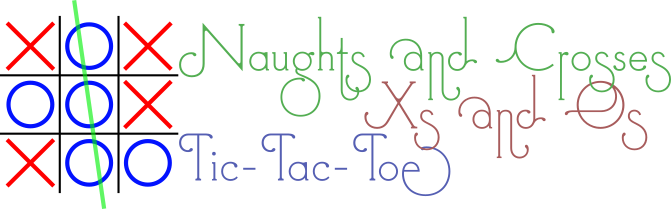
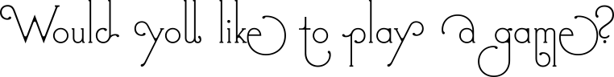 (Wargames (1983))
If you happen to have recently hacked into NORAD (North American Aerospace Defense Command) then it is quite possible that you are stuck in the 1980s and are looking to play Global Thermonuclear War (Wargames (1983)), take it from me: it really won't turn out hope you hope.
On the other hand if you are looking for what is arguably the simplest of all strategy games, then you've come to the right place. This article was inspired by the PyBites Coding Challenge 12—Build a Tic-tac-toe Game.
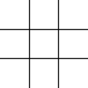
Traditionally, naughts and crosses (Wikipedia article on Tic-tac-toe) is a pencil and paper game for two players: one playing the symbol 'O', pronounced 'naught' or 'oh', and the other playing 'X', pronounced 'cross' or 'ex'. The game begins with a 3x3 grid of nine cells, and the players take turns at drawing their symbols into one of the empty cells. The aim is to achieve the occupation of three cells in a row, horizontally, vertically or diagonally, with their own symbol, whilst at the same time interfering with their opponents attempts to do likewise. There are eight possible winning lines are shown in the figure below.
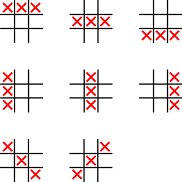
The first thing that is necessary in implementing any game is deciding how it should be represented both to the player and when it is held in the computer memory. We are working with fixed a three by three grid in this game, so it is easy to see that a series of nine consecutive elements of an array can be used. Like this:
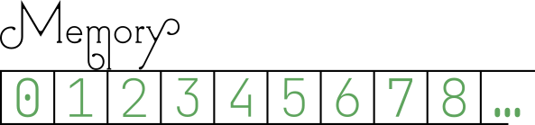
These memory cells, in turn, map to the three rows of three cells that will be displayed to the player. To help the player to associate the positions of the cells, however, it is convenient to give a different external mapping that is based upon something familiar. A familiar three by three grid is found on the keyboard numeric keypad, but this is 'upside down' compared to how we have suggested the internal representation will be achieved.
This difference in representation can be handled in a few different ways:
There are implications for each of these options. Firstly, if the internal representation is changed, it will be necessary to extract the details for the grid when it is being displayed in a non-sequential order. This is not an impossible situation, but adds a layer of complexity that is probably undesirable. Secondly, if the external representation is changed, then it inconveniences the player who will have to think more about the value of the cell rather than the position. Thirdly, and finally, translating between the two systems allows the positives of both representations to be exercised with a minor inconvenience of ensuring that the interface between the two sides is patrolled appropriately.
Assuming that the third option is taken we have the following representations:
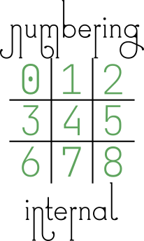 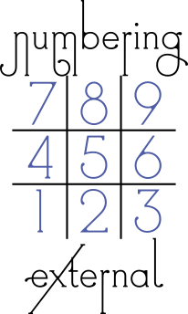
It is always wise to start off a Python file with a descriptive comment about the file, who wrote it, any copyright declarations, the place within a project that it belongs and what the weather is like when you write the code, possibly less likely on that last one. So, we begin our project and, as it is going to be a single file, just comment on what the whole project is about. If this was to be a one of a number of files then the description would focus upon the functionality of this particular file.
"""
Proper name: 'Naughts and Crosses'
Irish name: 'Xs and Os'
American name: 'Tic Tac Toe'
Reason: Who on Earth has a clue? It's an historical thing.
"""
Lovely. That'll do nicely. Not much coding going on there though. There are going to be some imports of various
modules to help us with the coding, straight off the bat we know that we are going to be dealing with some kind of
memory cells, this brings to mind that we'll need coding hints for things like List and perhaps Union so we'll add
those in for a starter. Later on we'll add more in at this place in the file.
from typing import List, Union
There are a number of elements of the game that can be usefully given names to help to document the code as we go along. The extra advantage to defining things by name at this point is that if we want to change things later on, then any changes made here automatically reflect through the whole code. (Hurrah!)
So, what elements need to be defined? We have already identified that there are internal and external representations involved, therefore those should be defined along with the mapping between the two. Externally we know that we're going to have 'O' and 'X' to show the symbols—that much is obvious—but there is a third symbol too: the blank. The blank could be just a space character, but that isn't very visible if you want to see the grid, particular when it is empty, but also when working out which row and column a single symbol might be on. For this reason we'll use the underscore ('_') to represent a blank space.
# External representations of the playing symbols
BLANK_SYM: str = '_'
O_SYM: str = 'O'
X_SYM: str = 'X'
That will make any grids clear:
___ _X_ ___
___ ___ _O_
___ ___ ___
Blank / One X / One O
What about internal representations? Does it matter? We could use the same symbols, however we do know that string comparisons are slower than integer comparisons, and so it would probably be better to use the quicker of the two given that there are a lot of comparisons that will be made. Let us keep it simple and just use the values zero to two.
# Internal representations of the playing symbols
BLANK_VALUE: int = 0
O_VALUE: int = 1
X_VALUE: int = 2
Now that we have those defined, we can create a couple of dictionaries that map between the two systems:
# Translation between systems
VAL_TO_SYM: dict = {
BLANK_VALUE: BLANK_SYM,
O_VALUE: O_SYM,
X_VALUE: X_SYM,
}
SYM_TO_VAL: dict = {
BLANK_SYM: BLANK_VALUE,
O_SYM: O_VALUE,
X_SYM: X_VALUE,
}
The chances are that whilst we are going through checking for winning lines and such like, we might want a quick way to refer to the opponent of the current player; we might not need it, but it could prove useful:
OPPONENT: dict = {
O_VALUE: X_VALUE,
X_VALUE: O_VALUE,
}
Just a couple of other things that need to be taken care of: the translation of internal to external grid positions, and vise versa. Looking at the graphical images of the two representations, it is easy to write out a couple of dictionary constants mapping between the two:
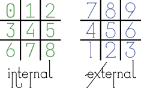
INTERNAL_TO_EXTERNAL: dict = {
0: 7, 1: 8, 2: 9,
3: 4, 4: 5, 5: 6,
6: 1, 7: 2, 8: 3
}
EXTERNAL_TO_INTERNAL: dict = {
7: 0, 8: 1, 9: 2,
4: 3, 5: 4, 6: 5,
1: 6, 2: 7, 3: 8
}
In order to help validate the player input we'll create a list of valid positions for their pieces, remember that
range() returns value that includes the first parameter, but excludes the second parameter:
VALID_POSITIONS: Set[int] = set(range(1, 10))
I originally created this as a list but realised later that it was better (essentially more efficient) as a set so
it is necessary to add Set to the from typing import line
Oh, and of course we need a list of winning combinations so that it is quick to check. It is convenient to specify a
winning line as a tuple of three integers, so here we have a list of (tuples of (three integers)): ah, Tuple, that's
another item to import from the typing module. The winning lines are describing the internal numbering as per this
diagram:
# A winning combination exists for three symbols in a row:
WINNING_COMBINATIONS: List[Tuple[int, int, int]] = [
(0, 1, 2), (3, 4, 5), (6, 7, 8),
(0, 3, 6), (1, 4, 7), (2, 5, 8),
(0, 4, 8), (2, 4, 6),
]
Class. Yes, this game is going to be encompassed within an object! We can start getting into the nitty-gritty right off
by declaring our class… in deference to our US cousins we'll call our class TicTacToe—it's both shorter than
NaughtsAndCrosses and less likely to cause argument over 'Nau…' versus 'Nou…' (Naught vs. Nought).
At the start of the class we'll define a few variables that are going to be useful throughout the game code, and define the types that we're expecting them to hold:
class TicTacToe:
# define the types of various internal variables
_board: List[int]
_turn: int
_turn_cycle: Iterator[int]
_move: int
Going through these:
_board: this will hold the current internal representation of the playing area;_turn: keeping track of whose turn it is will be very necessary, this should only ever be O_VALUE or X_VALUE;_turn_cycle: a useful iterator object that returns an endless sequence of O_VALUE, X_VALUE, O_VALUE,
X_VALUE, and so on; and_move: a count of the number of moves taken. There are nine spaces and so there is a maximum of nine moves.As we're adding yet another type hint here, it's probably best to make sure that our import statement has caught up with all the various additions:
from typing import List, Union, Set, Tuple, Iterator
Hopefully that's got all our typing needs covered now.
An important part of every class in the __init__() initializer method, or Constructor, that is used to set up the
blank object:
def __init__(self):
"""Constructor, allocate the blank board"""
# Create an array of cells to hold the grid positions.
self._board = [BLANK_VALUE] * len(VALID_POSITIONS)
self._turn_cycle = cycle([O_VALUE, X_VALUE])
self._turn = self._next_turn()
self._move = 0
A little explanation may be useful here, the _board is set by the curious construction above: multiplying a
single element list by the length of a set?? In this case the * does not literally indicate mathematical
multiplication, but rather duplication: it indicates that the list element is to be repeated. As an example here is a
sort console log showing the use of the functionality:
Python 3.8.5 (default, Sep 4 2020, 07:30:14)
[GCC 7.3.0] on linux
>>> f = [1]
>>> f
[1]
>>> f * 8
[1, 1, 1, 1, 1, 1, 1, 1]
This is a simple method of creating a list containing a repeated element, however, it should be noted that it is not
good for very large lists due to the requirement of core memory in making the list. We know that in this case the length
of the VALID_POSITIONS set is only nine so there is no worry about excessive memory use.
The _turn_cycle variable is created with a very useful element of the itertools module. cycle creates a repeating
iterator from the provided iterable parameter. Here we are passing a two element list, consisting of the two player
options, and in return we get an object that will respond to the next() method by returning each element in turn, when
the list is exhausted it automatically starts at the beginning again (Python Docs,
itertols.cycle(iterable)).
Our imports do not currently include the itertools module, so we need to add the extra import line at the top of the
file:
from itertools import cycle
Looking back at the __init__() method it can be seen that _turn is initialised by the return value of another
method, _next_turn(). It is possibly easy to guess what this method does, but let's sketch it in now to be sure:
def _next_turn(self) -> int:
return next(self._turn_cycle)
Yes, we're using the _turn_cycle variable to pick off the next player; this is why it was necessary to assign
_turn_cycle before _turn in the __init__() method. It might seem a little odd to have a 'private' method that
just returns the value from a private iterator, but there are two reasons for doing this:
1. it ensures that the syntax for next(self._turn_cycle) is consistently followed; and, more importantly
2. it allows for additional functionality to be performed when the next turn is being selected without having to seek
out every instance of the operation.
Arguably one of the most important elements of the object is to provide a visible version of the board layout, remember that our internal representation follows for directly printing out in three rows so there is no need to manipulate the order before generating the output:
def __str__(self):
"""Print the board"""
return '\n'.join(
' '.join(
VAL_TO_SYM[c]
for c in self._board[s * 3:(s + 1) * 3]
) for s in range(3)
)
This looks a little complex because it is using multiply nested str.join() statements. It may become clearer if we
unwind it into a longer version:
def __str__(self):
"""Alternative view of same function"""
output = []
for s in range(3):
row = []
for t in range(3):
c = self._board[s*3 + t]
row.append(VAL_TO_SYM[c])
output.append(' '.join(row))
return '\n'.join(output)
It is much easier to see now that there are two loops counting from zero to two (remember that the value in range()
is exclusive on the upper limit); the outer loop s counts the rows, whilst the inner loop t counts the columns. A
cell value c is extracted from the _board using an offset calculation, and then the VAL_TO_SYM dictionary
translates the internal value to the external symbol and adds it to row. Once a full row has been compiled,
it is added to output as a single string with spaces between each value using ' '.join(row). Finally, once the
three rows have been added to output, they, in turn, are joined together with a newline character inserted between
each row. The joined together rows are returned as a single string, completing the method. The 'single line' version
of the method, above, has all the same functionality, but tightly parcelled up in a
nested list comprehension.
Now we're going to introduce a couple of helper methods to the class. These two methods will not actually change any element of the class object, but rather compute the logical mappings between internal and external grid positions. Since they are not making any changes, they can be marked as 'static' methods. All they actually do is to use the dictionaries that we set up earlier to perform the translation. Using methods in this way, again allows modifications to structures without requiring wholesale rewrites.
@staticmethod
def _ndx_to_cell_(ndx: int) -> int:
return EXTERNAL_TO_INTERNAL[ndx]
@staticmethod
def _cell_to_ndx_(cell: int) -> int:
return INTERNAL_TO_EXTERNAL[cell]
In order to save on typing, we have named these methods using the abbreviation 'ndx' for the external index, and 'cell' for the internal cell offset.
Right, we're now up to the point where we're going to actually put a players move onto the board. As this is an
interaction between the player and the computer, it is always wise to attempt to anticipate things that the player
could do wrong… such as entering the number of a cell that has already been played, or even trying to play in cells that
do not exist! Python has the perfect mechanism for flagging up this kind of error: the Exception system. We can
create a couple of custom exceptions for ourselves by putting the following code above the main class declaration:
class BlockedCell(Exception):
pass
class InvalidMove(Exception):
pass
As easy as that! To create a custom exception all we need to do is to create a class inheriting from the systems
Exception class. If we wanted our exception to do something beyond the normal exception system, such as automatic
logging of the error, then it can be built onto this definition; otherwise, if we just want a new exception name, it is
appropriate to state pass, meaning (in this case) don't add anything to the standard class.
So to the player_move() method. As the game object is stateful (it knows what the current state of play is and keeps
track of which player is playing), we can just pass the location that the user wishes to play in. This will be an
external position as it's coming from the user, so we'll be making use of the _ndx_to_cell_() helper method to do
the appropriate translation once we've made sure that the target_position is on the board. Here's the code:
def player_move(self, target_position: int):
"""
Attempt to place the player move
May raise exceptions: BlockCell, InvalidMove
"""
if target_position in VALID_POSITIONS:
cell = self._ndx_to_cell_(target_position)
if self._board[cell] is BLANK_VALUE:
self._board[cell] = self._turn
else:
raise BlockedCell(
f'Cannot play at {target_position}, it is already held by {VAL_TO_SYM[self._board[cell]]}')
else:
raise InvalidMove(f'Invalid move, {target_position} not available')
Notice that the documentary comment (the docstring) at the start of the method notes that it can raise exceptions:
this is a good habit to cultivate so that you know by requesting the documentation either by using an IDE that
automatically does so, or by typing help(TicTacToe.player_move) in the interactive python console:
>>> from tictactoe import TicTacToe
>>> help(TicTacToe.player_move)
Help on function player_move in module tictactoe:
player_move(self, target_position: int)
Attempt to place the player move
May raise exceptions: BlockCell, InvalidMove
The second thing to note is that it doesn't assume that the player is either 'O' or 'X', rather it uses the _turn
variable to identify the current player. In this way, the same routine can play to the board for either player.
Once the player has made their move, the (private) method _next_turn() will advance to the next player. Why was it
made as a 'private' method? The reason was because it is designed to work with internal representations, it is a
wrapper around the _turn_cycle iterator, and we want to stop the internal values being inadvertently revealed outside
the object. We need a public method that can be used to switch players, save the active player, and which returns the
external representation of the player whose turn it is:
def next_player(self) -> str:
self._turn = self._next_turn()
return VAL_TO_SYM[self._turn]
We use the private method to obtain the next scheduled player, save it as the current _turn and then use the
VAL_TO_SYM dict to return either 'O' or 'X' as appropriate.
To summarise, our TicTacToe class so far:
There is something missing though: deciding a winner!
There are three distinct outcomes for a finished game: win, lose or draw. In order for the outcome to be revealed we
can create properties that evaluate the state of the board with respect to the current player. As there is a common
thread in all these tests, we make a helper method, find_winner(), to hold the common code.
def find_winner(self) -> Union[int, None]:
"""Find a winner, 'O', 'X' or None"""
for s in [O_VALUE, X_VALUE]:
if any(all(self._board[c] == s for c in combo) for combo in WINNING_COMBINATIONS):
return s
return None
There is a strange looking construct in the if statement here any() and all() are builtin functions of Python,
(Python Docs, all(iterable)
and Python Docs, any(iterable))
that can evaluate a group of boolean expressions in a way that smartly returns a result as soon as it is confident.
Taking any() as the example, it will work through all the elements of the iterable until it find one that evaluates
to True, if it gets to the end of the iterable, or the iterable is empty, then it returns False. This technique of
stopping as soon as a result is confident is known as short circuit evaluation. As a regular function it would be
coded as:
def any(iterable):
for element in iterable:
if element:
return True
return False
Similarly, all() works through the iterable until it finds one that is False:
def all(iterable):
for element in iterable:
if not element:
return False
return True
(These two examples are taken from the Python Docs page on
library functions.)
Going back to the find_winner() method, we can see that there is an all() function nested inside an any()
function: let us unpick what is going on. Just as with the __str__() method above, we have a nested comprehension, so
we can unroll it and see it in an expanded view, taking into account the definitions of all() and any() above:
def find_winner(self) -> Union[int, None]:
"""Find a winner, 'O', 'X' or None"""
for s in [O_VALUE, X_VALUE]:
# ANY of the following
any_ok = False
for combo in WINNING_COMBINATIONS:
# ALL of the following
all_ok = True
for c in combo:
if self._board[c] != s:
all_ok = False
break
if all_ok:
any_ok = True
break
if any_ok:
return s
return None
Starting from the bit that hasn't changed, we're going to loop through the two player values to make the comparisons.
The variable s is being used to hold the currently being tested player, normally it would be recommended that a
longer, descriptive, name would be used but to do so in the original short method would have resulted in an
overlong line with negligible benefit: this kind of trade off should be considered carefully before being used too
often. At the next level we process the any() function. As we're not using the builtin function, we need a flag to
track when we can short circuit the test. We are going to loop through each of the possible WINNING_COMBINATIONS,
passing each combination to the all() function level. Again a flag is needed to keep track…
We've come to the meat of the method now: combo holds a particular winning combination of cells, all_ok is set to
True as the default 'return' value for the inner loop and any_ok is set to False as the default 'return' value
for the outer loop. The inner loop looks through the cells indicated in combo to check if they all have the currently
being tested player: as soon as a cell is found that doesn't have that value, all_ok is reset to False and a break
is executed to 'escape' from the for c in combo: loop. At this point either the test found a cell that wasn't the
right player, or it looped right through finding all the cells belonging to the currently being tested player. If the
latter happened, then all_ok will still be set to True and we've found a winning line so we can set any_ok to
True and break out of the for combo in… loop. Again we do a check, this time on any_ok to see if there's been
a winning line found, and, if so, we actually return the winning player value. Finally if the for s in… loop passes
out with no winning line found for either player then we return None. This indicates 'no winner' not 'draw'.
Now that we have that helper method we can create a set of properties that will provide the current state of the game:
@property
def win(self) -> bool:
"""Test if the game is won"""
return self.find_winner() == self._turn
@property
def lose(self) -> bool:
"""Test if the game is lost"""
return self.find_winner() == OPPONENT[self._turn]
@property
def draw(self) -> bool:
"""Test if the game is a draw"""
return not (any(c == BLANK_VALUE for c in self._board))
@property
def win_draw_lose(self) -> bool:
"""Test if the game is still in play"""
return self.win or self.lose or self.draw
The properties win and lose purely check the returned value to see if it is the player or the opponents internal
value. On the other hand, draw searches through the board for a BLANK_VALUE, if there are no blanks present then
there is no where left to play, therefore, it's a draw. Lastly, the property win_draw_lose checks to see if there is
any reason for the game to have ended without being specific.
One final property and we should be ready to play! What is that last property? The player symbol is needed to prompt the appropriate player for their turn:
@property
def player(self) -> str:
return VAL_TO_SYM[self._turn]
Time to write some code to actually use the TicTacToe class. In the normal line of development we would have been
developing this piece of code in tandem with the actual class, however, in order to concentrate on the class it has
been left until this point. As it's going to be tacked to the end of the file we'll use a special test so that it can
still be used as a module if so desired:
if __name__ == "__main__":
When Python imports a file through an import instruction (or similar), it automatically sets the special variable
__name__ to the name of the module. However, when Python loads a module as a script in order to 'run' it, then
__name__ is set to the value "main" allowing us to easily detect when we're, ahem, the main file.
We are going to set up a 'forever' loop to keep playing… we won't ever want to stop will we??
while True:
At the start of our game loop we create an instance of the TicTacToe object, and announce our intention:
game = TicTacToe()
print("Let's play Naughts and Crosses!")
There is an inner loop here that keeps going until the game is won, drawn or lost… we have a useful property to check
that. Each time around the loop we print out what the board look like, asking the object to print like this
automatically invokes the __str__() method:
while not game.win_draw_lose:
print('\nCurrent state of game:')
print(game)
Now we have some player input so we should anticipate problems, using a try…except… construct will make sure we have
a chance of keeping control of any such problems. We ask for a game play, using game.player to display either 'O' or
'X' and then attempt to convert that typed in game play into an integer. Note that if the player does not enter a
number then the attempted conversion will raise an exception, we'll handle this later but we need not worry about it
in the rest of this piece of code.
try:
mv = input(f'Where would you like to play your {game.player}? ')
position = int(mv)
We have the players intended move now in position (external representation), so that can be passed to
game.player_move() to place the appropriate symbol. Remember that player_move() can raise a couple of exceptions,
however, as we are in the middle of a try…except… construct we need not worry about errors at this point and can
continue knowing that the move was accepted.
game.player_move(position)
This is the point at which we check for the game having been won or drawn, as the current player cannot have lost by
making a move, we need not check for the 'lose' condition. If either of the two conditions are met then we print out
the game grid in its final position along with a message indicating the win or draw status. Then there is a break in
each case: this will exit the while not game.win_draw_lose loop allowing a new game to begin.
if game.win:
print(game)
print(f'**WIN** We have a WINNER!! Well done {game.player}.')
break
if game.draw:
print(game)
print('**DRAW** That was a little pointless in the end.')
break
If the game is not won or drawn though, then we move the game object on to the next player before repeating the play
position input at the top of the while not game.win_draw_lose loop.
game.next_player()
Remember those error possibilities with the game.player_move(position)? Well here at the end of the try… construct
we have a series of except… clauses picking up on the specific errors that we are expecting. In each case the
response is to print an error message as appropriate and then to return to the top of the while loop.
except InvalidMove:
print(f'Poor choice, Grasshopper, "{mv}" is not and acceptable move: use the numeric keypad layout!')
except BlockedCell:
print(f'Sorry that spot is already taken.')
There was one other possible exception that we anticipated: when converting the players typed in move, we attempt to
convert the string to an integer. This can raise a ValueError that we pick up here to give an appropriate error
message before going on back to the top of the while loop.
except ValueError:
print(f'Please indicate position as though it were the numeric keypad.')
At this point, if everything works out as it should, you should have a working Noughts and Crosses game for two players; or yourself playing two sides!
It can get tiring playing just against yourself, perhaps we can spice things up a bit by getting the computer to play against us?
The Wikipedia article on Tic-tac-toe has a set of steps forming a strategy that can be followed when playing a game, these steps are an excellent starting point for programming an artificial opponent. Let us take a look at the steps from a programming point of view and work out if it is possible to craft an opponent:
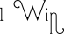
Go for the win! What we actually want to seek here is one of the winning rows which has a gap and two of the current players symbols in.
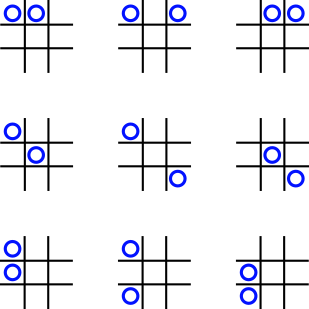
It would be useful if we could check each line without actually needing to compare all the values individually. There are actually ten distinct combinations of 'O' and 'X' lines, ignoring ordering and reflections, as can be seen in the following graphic
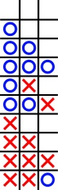
We need a method to:
In order to fulfil these requirements we should look at a method that combines the three internal values into a single value that is the same regardless of ordering: this leads us to a summation or product of the values. Let's see how this works out.
Currently, we have:
# Internal representations of the playing symbols
BLANK_VALUE: int = 0
O_VALUE: int = 1
X_VALUE: int = 2
The combinations result in:
| combination | values | sum | product |
|---|---|---|---|
| _ _ _ | 0 0 0 | 0 | 0 |
| O _ _ | 1 0 0 | 1 | 0 |
| O O _ | 1 1 0 | 2 | 0 |
| O O O | 1 1 1 | 3 | 1 |
| O X _ | 1 2 0 | 3 | 0 |
| O O X | 1 1 2 | 4 | 2 |
| X _ _ | 2 0 0 | 2 | 0 |
| X X _ | 2 2 0 | 4 | 0 |
| X X X | 2 2 2 | 6 | 8 |
| X X O | 2 2 1 | 5 | 4 |
From these results it is easy to see that two Xs and a blank uniquely give a sum of four and a product of zero; unfortunately two Os and a blank give exactly the same values as one X and two blanks. The product value actually only really identifies when there is a space in the line, and it is necessary to calculate both the sum and the product to correctly identify the one line that we do want. This seems excessive. Part of the problem with separating the identity of 'O' and 'X' is that the values we currently have are factors of each other, perhaps using prime numbers would make a difference?
Suggested new values:
# Internal representations of the playing symbols
BLANK_VALUE: int = 2
O_VALUE: int = 3
X_VALUE: int = 5
The combinations result in:
| combination | values | sum | product |
|---|---|---|---|
| _ _ _ | 2 2 2 | 6 | 8 |
| O _ _ | 3 2 2 | 7 | 12 |
| O O _ | 3 3 2 | 8 | 18 |
| O O O | 3 3 3 | 9 | 27 |
| O X _ | 3 5 2 | 10 | 30 |
| O O X | 3 3 5 | 11 | 45 |
| X _ _ | 5 2 2 | 9 | 20 |
| X X _ | 5 5 2 | 12 | 50 |
| X X X | 5 5 5 | 15 | 125 |
| X X O | 5 5 3 | 13 | 75 |
Now we have unique values for both the two Os and the two Xs, in the sum and the product. However, in the summation there is a conflict of identification for the rows consisting of three Os and of a single X. We could experiment with other values, but the product values are fully unique across our requirements.
In order to seek a winning move we can scan through the WINNING_COMBINATIONS to search for a product of 18 for a 'O'
win or 50 for an 'X' win. In our code we can do something like this:
# New imports
from collections import defaultdict
from functools import reduce
from operator import mul
# Update the internal representations of the playing symbols, this will automatically change
# the internal values throughout the program.
BLANK_VALUE: int = 2
O_VALUE: int = 3
X_VALUE: int = 5
# Add a new function to the class.
class TicTacToe:
def _ai_move(self) -> int:
"""Identify a move for the computer to make"""
winning_lines = defaultdict(set)
for line in WINNING_COMBINATIONS:
prod = reduce(mul, [self._board[c] for c in line])
winning_lines[prod].add(line)
We are creating a dictionary of lines that share the same 'product value', so if there are multiple lines capable of a
winning move then they will all be listed in the set associated with the appropriate value. Speaking of winning moves,
it would be useful to define the values that we are looking for up at the top of the file, we'll create a dictionary
named WINNING_PROD:
# The product of values in an *almost* winning line…
WINNING_PROD = {
O_VALUE: O_VALUE * O_VALUE * BLANK_VALUE,
X_VALUE: X_VALUE * X_VALUE * BLANK_VALUE,
}
Note that the references are for O_VALUE, X_VALUE and 'BLANK_VALUE' so that if we change those again, they will
be automatically updated. Now that that has been done, it is a very simple test to check if a winning line is
available.
# 1. Let's see if there is a winning line for the current player
if winning_lines[WINNING_PROD[self._turn]]:
# find the blank in the first winning line.
line = winning_lines[WINNING_PROD[self._turn]].pop()
return [n for n in line if self._board[n] == BLANK_VALUE][0]
This takes advantage of the defaultdict property of returning an empty entry if the requested index doesn't exist. If
there is a set associated with the appropriate index then one item, it doesn't matter which as multiple entries will all
be appropriate 'nearly winning lines.' A list comprehension searches out the BLANK_VALUE and finally returns the
internal location of the gap by dereferencing the first, and only, element.
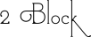
If we cannot win with the next move, then the next priority is to make sure that our opponent doesn't win… we need to play a blocking move; or, to put it another way, put our symbol in the spot when the opponent could make a winning move. Conveniently we have already created a dictionary holing all the lines that could be played, and that includes 'nearly winning lines' of our opponents too. This means that a block move is just a case of looking for a winning position like above, but for the opponent.
# 2. Block: If the opponent has two in a row, the player
# must play the third themselves to block the opponent.
if winning_lines[WINNING_PROD[OPPONENT[self._turn]]]:
# find the blank to play a block.
line = winning_lines[WINNING_PROD[OPPONENT[self._turn]]].pop()
return [n for n in line if self._board[n] == BLANK_VALUE][0]
This is almost exactly the same as the first section above, but uses the OPPONENT dictionary to pick out our
opponents symbol instead.
The similarities of these two pieces of code indicate a good place to examine for refactoring once we have completed the function.
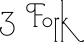
Creating a fork means placing a piece that can contribute to two separate lines to give a win.
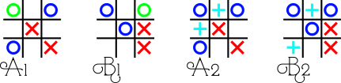
In this image the first two grids show 'O' having just played a fork move (indicated by the green 'O'); in the second two grids we see just why these positions are called 'forks,' the cyan '+' marks the alternative places that 'X' could play, in each case 'O' wins on the next turn by playing the alternative.
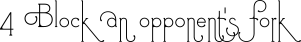
In a similar case to the above, blocking an opponent's fork means anticipating when your opponent is about to play a move that will lead to a fork and playing in that spot before they can. If we examine the moves leading up to position A1 above:
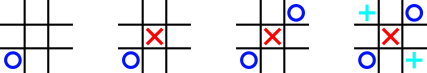
'O' starts off playing in the bottom corner, 'X' replies by playing in the middle, then 'O' plays in the opposite corner… at this point 'X' spots that 'O' can play in either of the other two corners (marked with the cyan '+' symbols) and end up with a fork: he cannot possibly block both of these cases though, and so the actual solution is to go for the draw and play in a side.
For now, we'll leave coding of forks because we want some form of weakness in our algorithm that a player might have some small change of winning!
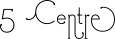
This play is a no-brainer: play in the centre. If this is the very first move of a game, then this is not such a good move though, as playing in a corner is the move that grants your opponent the most opportunities to make a mistake.
# 5. Center: A player marks the center.
if self._board[4] == BLANK_VALUE:
return 4
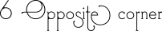
If we have progressed this far through our algorithm, then the chances are that there haven't been many moves: let's see if we can find an empty space opposite a space occupied by our opponent:
# 6. Opposite corner: If the opponent is in a corner, the
# player plays the opposite corner.
for x, y in [(0, 8), (2, 6), (6, 2), (8, 0)]:
if self._board[x] == OPPONENT[self._turn] and self._board[y] == BLANK_VALUE:
return y
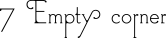
Failing to find an opposite corner, we just select an empty corner.
# 7. Empty corner: The player plays in a corner square.
for x in [0, 2, 6, 8]:
if self._board[x] == BLANK_VALUE:
return x
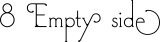
Finally, all other spaces have been checked, so there can only be side(s) remaining. Select one of those.
# 8. Empty side: The player plays in a middle square on any
# of the 4 sides.
for x in [1, 3, 5, 7]:
if self._board[x] == BLANK_VALUE:
return x
By the time we have worked through all of these options a valid move will have been returned—in internal
representation. However, what if something that we were not expecting happened? For example, if the _ai_move()
method was called when the board has no moves left? It is worth including an exception at the end of a routine
that is intended to return a value, rather than leave it to default to returning None:
raise InvalidMove(f"Couldn't identify a move to make for AI controlled {self.player}")
Our _ai_move() method is now as complete as we need it to be, so all that is required is to build a mechanism for it
to be called.
First off, as we will want to let the player know what is going on we need to have a method that calls this internal method and translates it to external representation ready to be shown to the user. The easiest, and quickest, way to achieve this is to add a method like this:
def ai_move(self) -> str:
return str(self._cell_to_ndx_(self._ai_move()))
We wrap up the internal method in a call to the helper method _cell_to_ndx() before casting it to a string ready for
return.
The driver code at the bottom of our file can now be modified to make use of this at any time to request an automatic
move selection: notice that it doesn't look for an 'O' move or an 'X' move, it looks purely for a next move. This
being the case, we can replace the move request input() with a call to game.ai_move() and receive an appropriate
selection regardless of which player is next. So, we can replace:
mv = input(f'Where would you like to play your {game.player}? ')
position = int(mv)
with
if game.player == O_SYM:
mv = input(f'Where would you like to play your {game.player}? ')
else:
mv = game.ai_move()
print(f'\nComputer chooses to play {game.player} at {mv}.')
position = int(mv)
and the computer will seamlessly take over playing the 'X' moves.
There you have it: a playable naughts and crosses game to keep your little darlings entertained for hours… however, there is always room for improvement. For example:
_ai_move() code there is a great similarity in the code between options 1 (win) and 2 (block), maybe this
could be pulled out into a helper method?For your convenience, the completed versions of the naughts and crosses code are stored here:
-- Geoff Riley
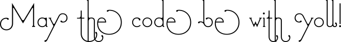
itertols.cycle(iterable)all(iterable)any(iterable)Do you want to get 250+ concise and applicable Python tips in an ebook that will cost you less than 10 bucks (future updates included), check it out here.

"The discussions are succinct yet thorough enough to give you a solid grasp of the particular problem. I just wish I would have had this book when I started learning Python." - Daniel H
"Bob and Julian are the masters at aggregating these small snippets of code that can really make certain aspects of coding easier." - Jesse B
"This is now my favourite first Python go-to reference." - Anthony L
"Do you ever go on one of those cooking websites for a recipe and have to scroll for what feels like an eternity to get to the ingredients and the 4 steps the recipe actually takes? This is the opposite of that." - Sergio S